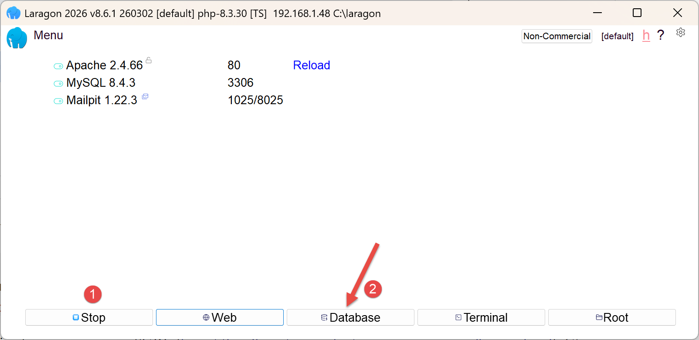
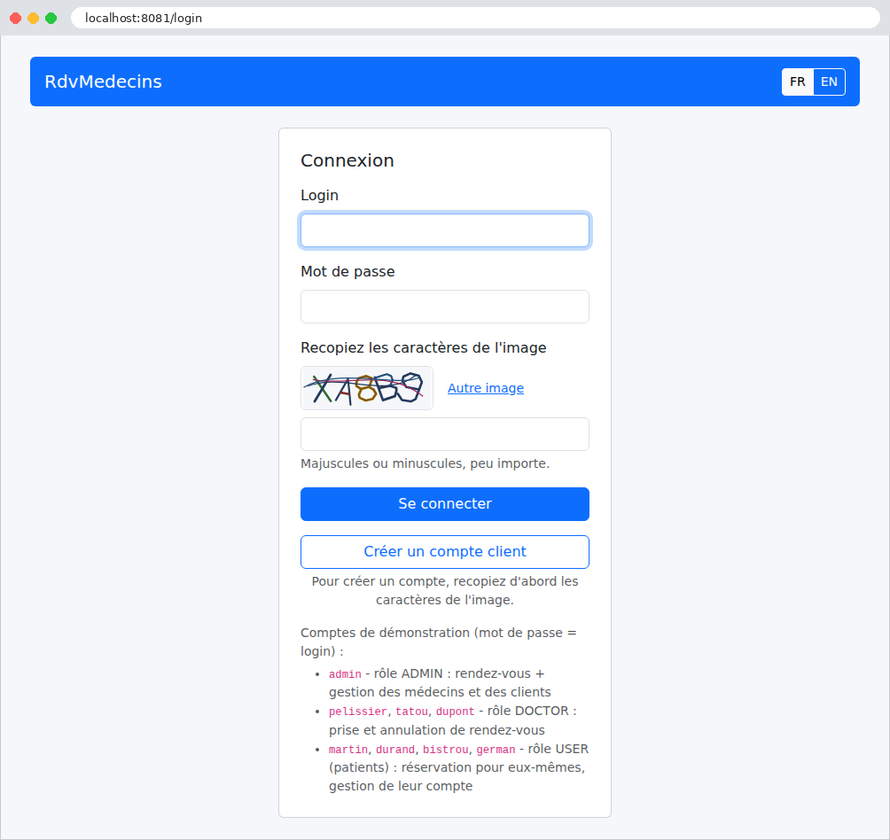

1. Introduction
Le PDF du document est |ICI|.
Les codes du document sont |ICI|.
Ce document est un produit de l'IA Claude d'Anthropic. Il fait suite au document Introduction étape par étape au framework web [Symfony] (2026), qui faisait lui-même suite aux documents Introduction étape par étape au framework web [Laravel], Introduction étape par étape au framework web [Flask], Introduction étape par étape au framework web [Spring MVC], Introduction étape par étape au framework web [ASP.NET Core MVC] et Introduction étape par étape au framework web [NestJS] (2026). Le présent document quitte le monde [PHP] pour revenir au langage [Python], celui du cours [Flask], mais avec un framework d'une tout autre ampleur :
- le framework [Symfony] est remplacé par le framework [Django] 6.1, avec le langage [Python] (version 3.12 ou plus récente) ;
- les vues [Twig] sont remplacées par les gabarits de [Django], écrits dans son langage de gabarits, le DTL (Django Template Language) ;
- le composant Form et le composant Validator de [Symfony] sont remplacés par les formulaires de [Django] (le module [django.forms]), qui décrivent à la fois les champs d'un formulaire HTML, leur conversion et leur validation ;
- le composant Security de [Symfony] (pare-feu, authentificateurs, rôles) est remplacé par des middlewares et des décorateurs écrits pour l'occasion, avec la bibliothèque [PyJWT] pour les jetons JWT et la bibliothèque [bcrypt] pour les mots de passe ;
- les écouteurs d'événements de [Symfony] sont remplacés par les middlewares de [Django], qui enveloppent le traitement de chaque requête, et par ses signaux ;
- l'ORM [Doctrine] est remplacé par l'ORM de [Django], toujours avec une base [MySQL].
Le document suit exactement la progression du cours [Symfony] : d'abord de nombreux petits projets, chacun centré sur une notion, puis une étude de cas complète, une application web de prise de rendez-vous pour un cabinet de médecins, dont tous les fichiers sont commentés. Les exemples portent les mêmes numéros et traitent les mêmes sujets que dans les cours [Symfony], [Laravel], [Flask], [Spring MVC] et [ASP.NET Core MVC] : un lecteur qui connaît l'un de ces cours peut comparer les frameworks exemple par exemple. Ce n'est pourtant pas nécessaire : ce document se lit seul, et ne suppose aucune connaissance de ces frameworks. On suppose seulement connues les bases de la programmation web (le protocole HTTP, le langage HTML) et celles du langage [Python] (variables, listes, dictionnaires, fonctions, classes, modules). Les éléments de [Python] moins courants qu'utilisent les exemples (décorateurs, classes de données, annotations de type, gestionnaires de contexte, générateurs...) sont expliqués à leur première apparition.
1.1. La place de Django dans une application web
Une application web est souvent construite en couches, chaque couche ne parlant qu'à ses voisines :

- la couche web reçoit les requêtes HTTP du navigateur et lui renvoie des pages HTML. C'est elle que [Django] nous aide à écrire ;
- la couche métier contient les règles de gestion de l'application (« un patient ne peut avoir qu'un rendez-vous à venir », par exemple). Elle ignore tout du web : elle pourrait aussi bien servir une application en ligne de commande ;
- la couche d'accès aux données (couche DAO, pour Data Access Object) lit et écrit dans la base de données. Nous utiliserons l'ORM (Object Relational Mapper) de [Django], qui fait correspondre les lignes des tables et des objets [Python].
La couche web suit elle-même le modèle MVC (Model - View - Controller). C'est ici qu'il faut faire attention au vocabulaire, car [Django] n'emploie pas les mots de MVC dans leur sens habituel. La documentation de [Django] parle d'architecture MTV (Model - Template - View) :
- ce que MVC appelle le contrôleur (C), [Django] l'appelle une vue (view) : c'est une fonction [Python] (ou une classe) qui traite un type de requête (par exemple [GET /agenda]). Une vue lit les paramètres de la requête, fait travailler la couche métier, puis choisit la page à afficher. Dans le cours [Symfony], c'était une action d'un contrôleur ;
- ce que MVC appelle la vue (V), [Django] l'appelle un gabarit (template) : un fichier HTML qui contient des expressions [{{ ... }}] et des instructions [{% if %}], [{% for %}]..., que le moteur de gabarits remplace par des données. Dans le cours [Symfony], c'était une vue [Twig] ;
- ce que MVC appelle le modèle (M), l'ensemble des données transmises à la page, [Django] l'appelle le contexte du gabarit : un dictionnaire [Python] ;
- enfin, ce que [Django] appelle un modèle (model), c'est une classe [Python] qui représente une table de la base de données (le fichier [models.py]) : ce que [Symfony] appelait une entité.
Ce document adopte le vocabulaire de [Django], puisque c'est celui de sa documentation, de ses messages d'erreur et des noms de ses fichiers ([views.py], [templates], [models.py]) : une vue est donc toujours, ici, la fonction [Python] qui traite une requête, et un gabarit, le fichier HTML qui fabrique la page. Le mot modèle a deux sens, que le contexte distingue toujours : au chapitre 2, le modèle d'une vue désigne les données qu'elle reçoit de la requête, décrites par une classe ; à partir du chapitre 7, un modèle de [Django] est une classe de l'ORM. Enfin, le mot gabarit de page (ou layout) désigne le gabarit commun dont les autres pages héritent (exemple 15).
Le traitement d'une requête suit les étapes numérotées du schéma :
- 1 : le navigateur envoie une requête HTTP, par exemple [GET /agenda?idMedecin=1&jour=2026-09-26] ;
- 2 : le serveur web reçoit la requête et la confie à l'application [Django], par l'objet [application] du fichier [config/wsgi.py]. Pendant le développement, ce serveur est celui qu'intègre [Django], lancé par la commande [python manage.py runserver] ; en production, ce sera un serveur [Python] comme [gunicorn] ou [waitress], souvent placé derrière un serveur web comme [nginx]. [Django] fait passer la requête par une suite de middlewares, des classes de [Django] et de l'application qui interviennent avant et après la vue (la session, la protection anti-CSRF, la langue, la sécurité...), et compare le chemin demandé aux routes de l'application, décrites dans les fichiers [urls.py], pour choisir la vue chargée de cette requête : c'est le routage ;
- 3 : la vue demande à la couche métier les données dont elle a besoin ; la couche métier s'adresse, si nécessaire, à la couche DAO, qui interroge la base [MySQL] en SQL, par l'ORM ;
- 4 : la vue construit le contexte (le modèle M) et demande au moteur de gabarits de fabriquer la page (fonction [render]) ;
- 5 : la page HTML fabriquée par le gabarit est la réponse de la vue, que [Django] renvoie au navigateur, après l'avoir fait repasser par les middlewares.
[Django] est, avec [Flask], l'un des deux grands frameworks web du monde [Python]. Gratuit et libre, il a été créé en 2003 par Adrian Holovaty et Simon Willison, au sein de la rédaction d'un journal du Kansas, le Lawrence Journal-World, et publié en 2005. Il porte le prénom du guitariste de jazz Django Reinhardt. Il est aujourd'hui développé par une communauté, sous l'égide de la Django Software Foundation, et fonctionne partout où fonctionne [Python] ([Windows], [Linux], [macOS]). Des sites très fréquentés l'utilisent ([Instagram], [Pinterest], [Mozilla]...). Sa devise, « le framework web pour les perfectionnistes pressés », dit bien son choix : là où [Flask] ne fournit qu'un noyau, que l'on complète par des extensions, [Django] est livré « piles comprises » (batteries included) : routage, gabarits, formulaires et validation, ORM et migrations de bases de données, sessions, messages, traductions, cache, protection contre les attaques courantes (CSRF, injection SQL, détournement de clics), et même une interface d'administration des données générée automatiquement. Tout cela forme un ensemble cohérent, documenté au même endroit, et conçu pour fonctionner ensemble. Par rapport à [Symfony], [Django] fait d'autres choix : pas de conteneur de services ni d'injection de dépendances, mais des modules [Python] que l'on importe ; une configuration écrite en [Python], dans un seul fichier ([settings.py]), plutôt qu'en [YAML] ; des vues qui sont de simples fonctions. [Django] a, lui aussi, une politique de versions régulière : une version tous les huit mois environ, une version « à support long » (LTS) tous les deux ans (la 5.2 en 2025, la 6.2 en 2027), et des avertissements d'obsolescence qui précèdent toujours de deux versions la disparition d'une fonctionnalité. [Django] sait fabriquer aussi bien des serveurs qui renvoient du JSON à un client [JavaScript] ([Angular], [React], [Vue.js], [Flutter]...), souvent avec l'extension [Django REST framework], que des applications web classiques, où c'est le serveur qui fabrique les pages HTML, le navigateur se contentant de les afficher. C'est ce second usage qu'étudie ce document.
Une différence avec [PHP] explique beaucoup de choses dans [Django] : l'application est chargée une fois, au démarrage du serveur, puis reste en mémoire et traite toutes les requêtes suivantes (exemple 01). Ce qui est construit au démarrage (la configuration, la table des routes, les objets rangés dans des variables de module) est partagé par toutes les requêtes. C'est l'inverse de [Symfony], qui reconstruisait l'application à chaque requête : nous y reviendrons souvent, en particulier au chapitre sur les portées des données.
1.2. Les outils utilisés
Les exemples ont été écrits et testés avec les outils suivants (leur installation est décrite en annexe) :
- [Python] 3.13 (toute version 3.12 ou plus récente convient : c'est le minimum de [Django] 6.1) ;
- [pip], le gestionnaire de bibliothèques de [Python], et le module [venv], qui crée des environnements virtuels (tous deux livrés avec [Python]) ;
- l'éditeur [Visual Studio Code], avec les extensions [Python] et [Pylance] de Microsoft (l'analyse du code, l'exécution, le débogage) et une extension pour les gabarits de [Django] (la coloration de leur syntaxe) ;
- un navigateur récent ([Chrome], [Firefox], [Edge]) ;
- l'outil en ligne de commande [curl], qui affiche les réponses HTTP brutes (il est livré avec [Windows] 10 et 11) ;
- le SGBD [MySQL] 8.4 ou plus récent (ou [MariaDB] 10.11 ou plus récent), par exemple celui de [Laragon] sous [Windows], à partir du chapitre sur l'accès aux données, et pour l'étude de cas.
[Django] et les autres bibliothèques ne font pas partie de [Python] : [pip] les télécharge depuis le dépôt PyPI (Python Package Index) lors de l'installation (il faut donc être connecté à Internet ce jour-là), et les installe dans un environnement virtuel, un dossier propre au projet (cf. plus loin). Chaque projet décrit ses bibliothèques dans un fichier [requirements.txt]. Le tableau suivant présente les principales, avec les versions utilisées :
Bibliothèque | Rôle | Version |
[Django] | le framework : serveur de développement, routage, vues, middlewares, gabarits, formulaires, sessions, messages, traductions, cache, ORM ; il installe les deux bibliothèques dont il a besoin : [asgiref] (le lien entre le code synchrone et le code asynchrone) et [sqlparse] (la mise en forme des ordres SQL affichés) | 6.1.1 |
[Babel] | la mise en forme des nombres, des montants et des dates selon la langue (exemple 16) | 2.18.0 |
[PyJWT] | les jetons JWT (chapitre sur l'authentification) | 2.15.0 |
[mysqlclient] | le pilote [MySQL] qu'utilise [Django] (exemple 28 et étude de cas) | 2.3.0 |
[bcrypt] | le hachage des mots de passe (étude de cas) | 5.0.0 |
[Django] s'installe d'ordinaire par [pip], puis on crée un projet par la commande [django-admin startproject], que [Django] installe (cf. annexes) :
Cette commande crée un dossier [mon_projet] qui contient un fichier [manage.py] et un paquet [mon_projet] de cinq fichiers ([settings.py], [urls.py], [wsgi.py], [asgi.py], [__init__.py]). On y ajoute ensuite des applications, par la commande [python manage.py startapp nom], qui crée un dossier de sept fichiers. C'est ainsi que l'on commence un vrai projet. Pour apprendre, cette méthode a un inconvénient : le fichier [settings.py] généré contient déjà une centaine de lignes, qui activent une dizaine d'applications et sept middlewares, dont on ne sait pas encore à quoi ils servent. Les exemples de ce document partent donc de l'autre bout : l'exemple 01 est la plus petite application [Django] possible, et chaque exemple n'ajoute que les fichiers et les réglages dont il a besoin, écrits et commentés à la main. L'étude de cas, à la fin, a la structure d'une application [Django] ordinaire.
1.3. Exécuter l'étude de cas
1.3.1. Installation de Laragon
L'étude de cas a besoin du SGBD [MySQL]. Laragon peut l'apporter, et plus encore. En septembre 2026, Laragon est disponible à l'URL [Download Laragon – Fast & Modern Dev Environment]. Laragon amène avec lui des outils qui permettent d'installer un serveur web et le SGBD [MySQL] :

- en [1], un serveur web Apache ;
- en [2], le SGBD [MySQL] ;
- en [3], un outil de messagerie que nous n'utiliserons pas ;
- en [4], lance tous les services (Apache, [MySQL], MailPit) ;
- en [5], affiche la page web d'URL [http://localhost]. Par défaut, cette URL désigne le dossier <laragon-install>\www où <laragon-install> est le dossier d'installation de Laragon ;
- en [6], lance l'outil HeidiSQL qui permet de gérer des bases de données MySQL. C'est avec cet outil que nous créerons la base de données utilisée par l'étude de cas ;
- en [7], ouvre un terminal dans lequel tous les binaires utiles à Laragon sont dans le PATH ;
- en [8], ouvre un explorateur windows dans le dossier associé à l'URL [http://localhost] ;
Le dossier d'installation de Laragon comporte les éléments suivants :

En [1], le dossier [bin] contient de nombreuses applications :

- En [1], le serveur web Apache ;
- en [2], un terminal de commandes ;
- en [3], un client [git] permettant de versionner les différentes versions d'un projet ;
- en [4], un gestionnaire de bases de données ;
- en [5], un gestionnaire courrier ;
- en [6], le SGBD [MySQL] ;
- en [7], un autre serveur web ;
- en [8], [node.js] pour exécuter des scripts Javascript ;
- en [9], un éditeur de texte ;
- en [10], l'interpréteur PHP ;
- en [11], l'interpréteur [Python] ;
- en [12], un serveur de cache ;
Laragon ramène avec lui un environnement de développement conséquent. Dans ce cours, nous utiliserons seulement le SGBD [MySQL] [6] et l'outil [heidisql] pour le gérer graphiquement. L'interpréteur [Python] [11] de Laragon n'est pas forcément dans une version assez récente pour [Django] 6.1 (il faut [Python] 3.12 ou plus récent) : nous installerons plutôt [Python] depuis son site officiel (cf. annexes), en cochant, dans l'installateur, la case qui ajoute [python] au PATH de la machine.
Le README de l'étude de cas indique qu'on doit taper dans un terminal, ouvert sur le dossier de l'application, les commandes suivantes :
pour créer un environnement virtuel [Python], le dossier [.venv], où seront installées les bibliothèques de l'application ;
pour activer cet environnement dans le terminal (sous [Linux] et [macOS] : [source .venv/bin/activate]). L'invite du terminal commence alors par [(.venv)] ;
pour installer les bibliothèques [Python] nécessaires à l'étude de cas ([Django], [mysqlclient], [PyJWT], [bcrypt]) ;
pour exécuter l'étude de cas. Si vous utilisez un terminal [PowerShell] dans VSCode, il se peut que [PowerShell] refuse d'exécuter le script d'activation, avec un message qui parle de « l'exécution de scripts désactivée sur ce système ». Pour l'autoriser, pour votre seul compte utilisateur, tapez une fois pour toutes dans un terminal [PowerShell] :
Vous aurez à relancer VSCode pour que cette modification soit prise en compte. Vous pouvez aussi choisir, dans VSCode, un terminal [Command Prompt] plutôt que [PowerShell], où le script [activate] s'exécute sans cette autorisation.
Pour créer la base de données [MySQL] nécessaire à l'étude de cas, nous procédons de la façon suivante :

- En [1], tous les services doivent être lancés ;
- en [2], l'option [Database] vous permet de gérer la base de données ;
L'option [Database] lance un utilitaire appelé HeidiSQL :

- En [1], vous pouvez sélectionner divers SGBD. La valeur par défaut proposée est le SGBD MySQL. Cela convient ;
- en [2], vous ouvrez une session de HeidiSQL ;


- En [1-2], exécutez un fichier SQL puis choisissez le fichier [dbrdvmedecins2.sql] que vous trouverez dans le dossier [django-sept-2026/rdvmedecins2-django/database] :

L'exécution du fichier [3] va créer la base [dbrdvmedecins2] utilisée par l'étude de cas. Pour le voir, faites F5 dans HeidiSQL pour rafraîchir l'affichage.
Remarque : les copies d'écran qui suivent montrent une base de données [dbrdvmedecins] alors que la base de données de l'étude de cas s'appelle [dbrdvmedecins2]. Les deux bases sont quasi identiques et on a donc estimé qu'il était inutile de refaire des copies d'écran.

La base de données [dbrdvmedecins] a été créée. On peut en voir le contenu :

- en [1-3], la table [clients] ;
- [id] est la clé primaire de la table ;
- [version] est le numéro de version de la ligne. Ce numéro augmente à chaque modification de la ligne ;
- [titre, nom, prenom] identifient la personne ;

- en [1-3], la table [medecins] ;
- [id] est la clé primaire de la table ;
- [version] est le numéro de version de la ligne ;
- [titre, nom, prenom] identifient la personne ;

- en [1-3], la table des créneaux horaires de consultation des médecins :
- [id] : clé primaire ;
- [version] : numéro de version de la ligne ;
- [id_medecin] : clé étrangère ciblée sur la clé primaire du médecin ;
- [hdebut, mdebut] : heure et minutes de début de la consultation. Ainsi [8,20] signifie 8h20.
- [hfin, mfin] : heure et minutes de fin de la consultation.

- En [1-3], la table [rv] des rendez-vous pris ;
- [id] : clé primaire ;
- [version] : numéro de version ;
- [jour] : jour du rendez-vous ;
- [id_creneau] : clé étrangère vers la clé primaire du créneau horaire du rendez-vous. Comme un créneau horaire est lié à un médecin, on sait quel médecin assure ce rendez-vous ;
- [id_client] : clé étrangère vers le numéro (clé primaire) du client qui consulte ;

- en [1-3], la table [users] qui liste les utilisateurs autorisés à utiliser l'application ;
- [id, version] : clé primaire, numéro de version ;
- [login, password] : identifiants de l'utilisateur ;
- [nom] : nom donné à l'utilisateur ;
- [role] : son rôle. [ADMIN] a tous les droits ; [MEDECIN] consulte son propre agenda ; [PATIENT] (un client du cabinet) prend et annule ses propres rendez-vous ;
1.3.2. Exécution de l'étude de cas
Note du réviseur : je conseille au lecteur d'exécuter immédiatement l'étude de cas comme il est indiqué dans ce qui suit. Une fois bien compris le rôle de cette application de rendez-vous, demander à son IA favorite de modifier l'application dans le sens suivant : désormais chaque médecin pourra :
- fixer lui-même les créneaux de consultation entre deux dates. Cela lui permettra de modifier ses horaires selon ses besoins ;
- supprimer dans l'agenda d'un jour donné certains créneaux : indisponible pour raisons personnelles par exemple ;
La modification n'est pas simple parce qu'elle implique un changement de structure de la base de données. Demandez à l'IA de vous fournir le nouveau code de l'application et le script SQL pour créer la nouvelle base de données. Pour cela, vous aurez besoin de lui fournir le zip du projet complet ainsi que le script SQL de l'ancienne base de données.
Par ailleurs, je n'ai pas révisé le cours produit par Claude. Il avait déjà produit des cours [NestJS], [ASP.NET Core MVC], [Spring MVC] et [Flask] parfaits. J'ai supposé qu'il en était de même pour celui-ci. Si vous butez sur un obstacle de compréhension, la solution est toujours la même : demandez à votre IA favorite de vous expliquer ce que vous ne comprenez pas. Claude, par exemple, fait ça très bien. Vous aurez peut-être besoin de lui "uploader" l'exemple que vous ne comprenez pas.
Fin de note.
L'étude de cas qui termine ce document est une application complète. Le lecteur voudra sans doute la voir fonctionner avant d'entrer dans le détail du framework : voici comment l'exécuter. Elle se trouve dans le dossier [rdvmedecins2-django], à côté du dossier [exemples] :
Il faut avoir installé [Python] (3.12 ou plus récent), [Visual Studio Code] et [MySQL] (cf. annexes). Puis :
- créer la base de données [dbrdvmedecins2], en exécutant le script [rdvmedecins2-django/database/dbrdvmedecins2.sql]. Avec [Laragon], on ouvre l'outil [HeidiSQL] (bouton Base de données), puis on exécute le script par le menu Fichier / Exécuter un fichier SQL (cf. ci-dessus). En ligne de commande, depuis le dossier [rdvmedecins2-django] :
- ouvrir le dossier [rdvmedecins2-django] dans [Visual Studio Code] (menu Fichier / Ouvrir le dossier), puis un terminal (menu Terminal / Nouveau terminal) ;
- créer l'environnement virtuel de l'application, l'activer, puis y installer ses bibliothèques : [pip] lit le fichier [requirements.txt], télécharge [Django] et les autres bibliothèques, et les range dans le dossier [.venv] de l'application (quelques dizaines de secondes). Sous [Windows] :
- sous [Linux] et [macOS], la deuxième commande s'écrit [source .venv/bin/activate]. [Visual Studio Code] propose, par une fenêtre, d'utiliser cet environnement pour le dossier : on accepte ; les terminaux ouverts ensuite l'activeront eux-mêmes ;
- vérifier la connexion à la base. L'application se connecte à [MySQL] sur [127.0.0.1], port 3306, avec l'utilisateur [root] sans mot de passe (les réglages par défaut de [Laragon]). Si votre compte [root] a un mot de passe, indiquez-le dans le fichier [.env] de l'application, dans la ligne [DB_PASSWORD=] ;
- lancer l'application :
- [Django] affiche :
Le serveur de développement écoute sur le port 8081 de la machine ([127.0.0.1], c'est-à-dire [localhost]). Chaque requête reçue sera signalée dans la console, ainsi que les ordres SQL envoyés à la base ;
- ouvrir l'adresse [http://localhost:8081] dans un navigateur :

- se connecter avec l'un des comptes de démonstration, dont le mot de passe est le login : [admin] (administrateur), [pelissier], [tatou], [dupont] (médecins), [martin], [durand], [bistrou], [german] (patients). Il faut aussi recopier les caractères de l'image, en majuscules ou en minuscules.
Au démarrage, la commande [runserver] vérifie le projet, et, avec [MySQL], se connecte pour cela à la base : si la base est inaccessible, le serveur ne démarre pas, et la console affiche l'erreur, à la fin d'une longue pile d'appels. Avec le message [(2002, "Can't connect to server on '127.0.0.1' (10061)")], c'est que [MySQL] n'est pas démarré ; avec [(1045, "Access denied for user 'root'@'localhost' (using password: NO)")], que le mot de passe est incorrect ; avec [(1049, "Unknown database 'dbrdvmedecins2'")], que le script SQL n'a pas été exécuté. Si la commande [python manage.py runserver] échoue avec le message [ModuleNotFoundError: No module named 'django'], c'est que l'environnement virtuel n'est pas activé (ou que [pip install] n'a pas été exécuté) ; avec le message [Error: That port is already in use.], c'est que le port 8081 est déjà occupé (par une autre version de l'application, par exemple). Le fichier [README.md] de l'application décrit d'autres cas. On arrête l'application par [Ctrl-C] dans le terminal ([Ctrl-Pause] sous [Windows], dit le message de [Django], mais [Ctrl-C] fonctionne aussi).
Une fois bien compris le rôle de cette application de rendez-vous, le lecteur peut demander à son IA favorite de la modifier dans le sens suivant : désormais chaque médecin pourra :
- fixer lui-même les créneaux de consultation entre deux dates. Cela lui permettra de modifier ses horaires selon ses besoins ;
- supprimer dans l'agenda d'un jour donné certains créneaux : indisponible pour raisons personnelles par exemple.
La modification n'est pas simple parce qu'elle implique un changement de structure de la base de données. Il faut demander à l'IA le nouveau code de l'application et le script SQL qui crée la nouvelle base de données, en lui fournissant le zip du projet complet ainsi que le script SQL de l'ancienne base de données. De même, devant un obstacle de compréhension dans ce document, la solution est toujours la même : demander à son IA favorite d'expliquer ce que l'on ne comprend pas, en lui fournissant, si besoin, l'exemple en question.
L'étude de cas, à la fin du document, présente l'utilisation de l'application, puis commente chacun de ses fichiers.
1.4. Les exemples
Les exemples sont rangés dans le dossier [exemples], un sous-dossier par exemple :
Chaque exemple est une petite application [Django], que l'on exécute seule. Tous les exemples utilisent les mêmes bibliothèques, décrites par le fichier [exemples/requirements.txt] :
- lignes 1-2 : des commentaires ; en [Python], comme dans ce fichier, un commentaire va de [#] jusqu'à la fin de la ligne ;
- lignes 3-6 : les bibliothèques, une par ligne, avec leur version exacte : [Django] lui-même, [mysqlclient] (l'accès à [MySQL], exemple 28), [PyJWT] (les jetons JWT, exemple 25) et [Babel] (la mise en forme des nombres et des dates selon la langue, exemple 16). L'opérateur [==] impose la version ; [>=6.1,<6.2] accepterait toutes les versions 6.1.x. Les deux bibliothèques dont [Django] a besoin ([asgiref], [sqlparse]) ne sont pas citées : [pip] les installe d'elles-mêmes, puisque [Django] les déclare.
[Python] ne connaît qu'un seul dossier de bibliothèques par interpréteur. Pour que chaque projet ait les siennes, dans les versions qui lui conviennent, on crée un environnement virtuel : un dossier qui contient une copie légère de l'interpréteur, et son propre dossier de bibliothèques ([Lib/site-packages] sous [Windows], [lib/python3.13/site-packages] ailleurs). Pour exécuter les exemples, on crée un environnement virtuel et on y installe leurs bibliothèques, une fois pour toutes, dans un terminal ouvert sur le dossier [exemples] :
[python -m venv .venv] exécute le module [venv] de [Python], qui crée l'environnement dans le dossier [.venv]. Le script [activate] (sous [Linux] et [macOS] : [source .venv/bin/activate]) modifie le PATH du terminal : les commandes [python] et [pip] désignent alors celles de l'environnement, et l'invite commence par [(.venv)]. [pip install -r requirements.txt] installe les bibliothèques du fichier. L'environnement [exemples/.venv] est partagé par les 28 exemples : on l'active dans chaque terminal où l'on veut en exécuter un. La commande [pip list] affiche les bibliothèques installées, [deactivate] désactive l'environnement. Le dossier [commun] contient le framework CSS [Bootstrap] ([commun/static/bootstrap]), partagé par les exemples qui mettent leurs pages en forme (à partir de l'exemple 15).
Les exemples ont presque tous la même structure, celle d'un projet [Django] ordinaire, réduit à l'essentiel. Par exemple, celle de l'exemple 13 :
- [manage.py] : l'outil en ligne de commande du projet, qui lance en particulier le serveur de développement (exemple 01) ;
- [config] : le paquet de configuration du projet : ses réglages ([settings.py]), ses routes ([urls.py], exemple 02), son point d'entrée pour un serveur web ([wsgi.py]). Un projet créé par [django-admin startproject] donne à ce paquet le nom du projet ; nous l'appelons [config] dans tous les exemples, pour que son rôle soit clair ;
- [pages] : une application [Django] : un paquet [Python] qui regroupe des vues ([views.py]), leurs routes ([urls.py]) et les classes dont elles ont besoin. Un projet est un assemblage d'applications, que le réglage [INSTALLED_APPS] énumère (exemple 02) ;
- [templates] : les gabarits (à partir du chapitre sur les gabarits).
Pour exécuter un exemple, on ouvre un terminal sur son dossier (dans [Visual Studio Code] : clic droit sur le dossier de l'exemple, puis Ouvrir dans le terminal intégré), on y active l'environnement virtuel des exemples ([..\.venv\Scripts\activate] sous [Windows], [source ../.venv/bin/activate] ailleurs), et on tape :
Tous les exemples écoutent sur le port 8000 : on ne peut en exécuter qu'un à la fois (ou il faut changer le port : [python manage.py runserver 8001]). On arrête le serveur par [Ctrl-C] dans le terminal. Il n'est pas nécessaire de relancer le serveur après une modification d'un fichier [Python] ou d'un gabarit : le serveur de développement surveille les fichiers du projet, et redémarre de lui-même quand l'un d'eux change (exemple 01).
Quand on ouvre le dossier [exemples] dans [Visual Studio Code], il faut indiquer à l'extension [Python] l'interpréteur de l'environnement virtuel (commande Python: Select Interpreter de la palette de commandes, [Ctrl-Maj-P], puis [.venv\Scripts\python.exe]) : l'extension [Pylance] analyse alors tous les fichiers avec les bibliothèques de l'environnement, y compris [Django] : on bénéficie, dans chaque fichier, de la complétion, de la navigation vers la définition d'une classe ou d'une fonction (touche [F12]), et du signalement des erreurs. Tous les exemples ayant un paquet [config], l'analyse peut confondre les paquets de deux exemples : c'est sans conséquence sur l'exécution, puisque chaque exemple est exécuté seul, depuis son propre dossier. Pour éviter ces confusions, il suffit d'ouvrir le dossier de l'exemple lui-même.
1.5. Contenu du document
Le document progresse ainsi :
Chapitre | Sujet | Exemples |
Vues, routage, réponses | de la requête à la vue : routes, applications, réponses, redirections, services partagés | 01 à 06 |
Le modèle d'une vue | les paramètres de la requête : lecture, conversion, validation par les formulaires de [Django], requêtes POST | 07 à 12 |
Les gabarits et les formulaires | le langage de gabarits de [Django], gabarit de page, fragments, balises et filtres personnalisés, formulaires, validation, PRG, protection anti-CSRF | 13 à 21 |
Internationalisation | une application en français et en anglais | 22 |
Portées des données | requête, session, cache, cookies | 23 |
Le cycle de vie d'une requête | les signaux, les middlewares, les convertisseurs de routes, la gestion des erreurs | 24 |
Authentification et autorisation | jeton JWT dans un cookie, middleware d'authentification, décorateurs, rôles, captcha, limitation des tentatives | 25 à 27 |
Architecture en couches et accès aux données | web / métier / DAO avec l'ORM de [Django] et [MySQL] | 28 |
Étude de cas | l'application RdvMedecins, commentée fichier par fichier | - |
Chaque exemple introduit peu de nouveautés, et les chapitres s'appuient les uns sur les autres : il est préférable de les lire dans l'ordre. L'étude de cas, elle, réutilise toutes les notions des chapitres précédents : chaque fois que c'est utile, son commentaire renvoie à l'exemple où la notion a été présentée. Les annexes décrivent l'installation des outils : [Python], [pip] et les environnements virtuels, [Visual Studio Code] et ses extensions, [MySQL] avec [Laragon], [curl], et l'outil [django-admin].